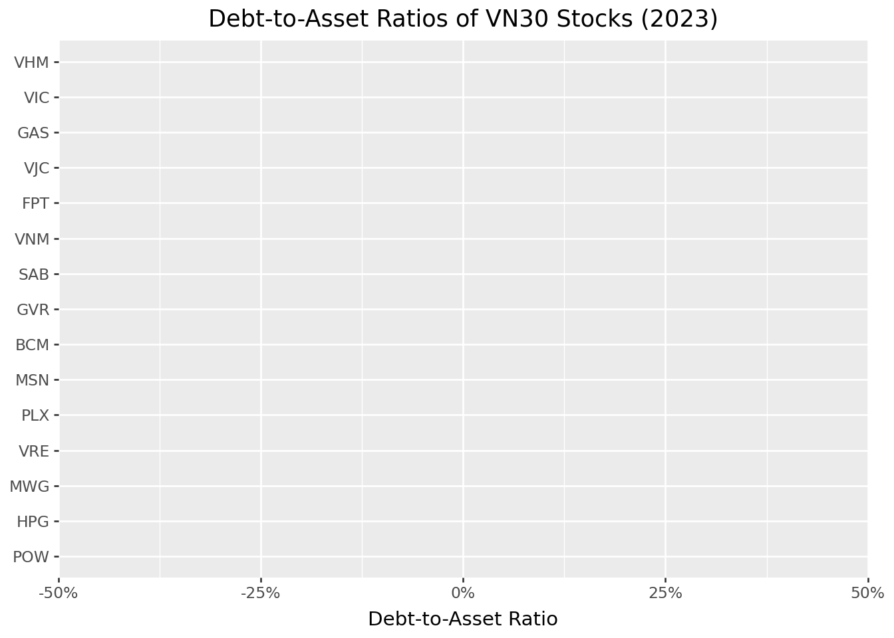
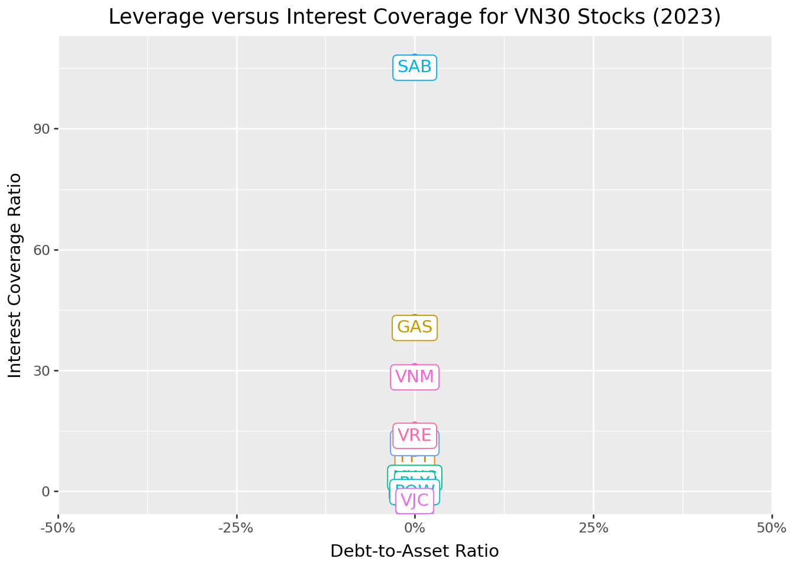

import pandas as pd
import numpy as np
from plotnine import *
from mizani.formatters import percent_format
from adjustText import adjust_text13 Financial Statement Analysis
13.1 From Market Prices to Fundamental Value
The previous chapters focused on how financial markets price assets in equilibrium. The Capital Asset Pricing Model showed that expected returns depend on systematic risk exposure, while Modern Portfolio Theory demonstrated how to construct efficient portfolios. But these frameworks take expected returns and risk as given, they don’t explain where these expectations come from.
Financial statement analysis addresses this gap. By examining a company’s accounting records, investors can form independent assessments of firm value, identify mispriced securities, and understand the economic forces driving business performance. Financial statements provide the primary source of standardized information about a company’s operations, financial position, and cash generation. Their legal requirements and standardized formats make them particularly valuable. Every publicly traded company must file them, creating a level playing field for analysis.
This chapter introduces the three primary financial statements: the balance sheet, income statement, and cash flow statement. We then demonstrate how to transform raw accounting data into meaningful financial ratios that facilitate comparison across companies and over time. These ratios serve multiple purposes: they enable investors to benchmark companies against peers, help creditors assess default risk, and provide inputs for asset pricing models like the Fama-French factors we will encounter in later chapters.
Our analysis combines theoretical frameworks with practical implementation using Vietnamese market data. By the end of this chapter, you will understand how to access financial statements, calculate key ratios across multiple categories, and interpret these metrics in context.
13.2 The Three Financial Statements
Before diving into ratios and analysis, we need to understand the three interconnected statements that form the foundation of financial reporting. Each statement answers a different question about the company, and together they provide a comprehensive picture of financial health.
13.2.1 The Balance Sheet: A Snapshot of Financial Position
The balance sheet captures a company’s financial position at a specific moment in time, think of it as a photograph rather than a movie. It lists everything the company owns (assets), everything it owes (liabilities), and the residual claim belonging to shareholders (equity). These three components are linked by the fundamental accounting equation:
\[ \text{Assets} = \text{Liabilities} + \text{Equity} \]
This equation is not merely a definition, it reflects a core economic principle. A company’s resources (assets) must be financed from somewhere: either borrowed from creditors (liabilities) or contributed by owners (equity). Every transaction affects both sides equally, maintaining the balance.
Assets represent resources the company controls that are expected to generate future economic benefits:
- Current assets can be converted to cash within one year: cash and equivalents, short-term investments, accounts receivable (money owed by customers), and inventory (raw materials, work-in-progress, and finished goods)
- Non-current assets support operations beyond one year: property, plant, and equipment (PP&E), long-term investments, and intangible assets like patents, trademarks, and goodwill
Liabilities encompass obligations to external parties:
- Current liabilities come due within one year: accounts payable (money owed to suppliers), short-term debt, accrued expenses, and the current portion of long-term debt
- Non-current liabilities extend beyond one year: long-term debt, bonds payable, pension obligations, and deferred tax liabilities
Shareholders’ equity represents the owners’ residual claim:
- Common stock and additional paid-in capital from share issuance
- Retained earnings (i.e., accumulated profits reinvested rather than distributed as dividends)
- Treasury stock: shares repurchased by the company
Understanding these categories is essential for ratio analysis. Current assets and liabilities determine short-term liquidity, while the mix of debt and equity reveals capital structure choices.
13.2.2 The Income Statement: Performance Over Time
While the balance sheet provides a snapshot, the income statement (also called the profit and loss statement, or P&L) measures financial performance over a period (e.g., a quarter or year). It follows a hierarchical structure that progressively captures different levels of profitability:
\[ \text{Revenue} - \text{COGS} = \text{Gross Profit} \]
\[ \text{Gross Profit} - \text{Operating Expenses} = \text{Operating Income (EBIT)} \]
\[ \text{EBIT} - \text{Interest} - \text{Taxes} = \text{Net Income} \]
Each line reveals something different about the business:
- Revenue (Sales): Total income from goods or services sold (i.e., the “top line”)
- Cost of Goods Sold (COGS): Direct costs of producing what was sold (materials, direct labor, manufacturing overhead)
- Gross Profit: Revenue minus COGS, measuring basic profitability from core operations
- Operating Expenses: Costs of running the business beyond production (selling, general & administrative expenses, research & development)
- Operating Income (EBIT): Earnings Before Interest and Taxes, measuring profitability from operations before financing decisions and taxes
- Interest Expense: The cost of debt financing
- Net Income: The “bottom line” (i.e., total profit after all expenses)
The income statement’s hierarchical structure allows analysts to identify where profitability problems originate. A company with strong gross margins but weak net income might have bloated overhead costs. One with weak gross margins faces fundamental pricing or production challenges.
13.2.3 The Cash Flow Statement: Following the Money
The cash flow statement bridges a critical gap: profitable companies can run out of cash, and unprofitable companies can generate positive cash flow. This happens because accrual accounting (used in the income statement) recognizes revenue when earned and expenses when incurred, not when cash changes hands.
The cash flow statement tracks actual cash movements, divided into three categories:
- Operating activities: Cash generated from core business operations. Starts with net income, then adjusts for non-cash items (depreciation, changes in working capital)
- Investing activities: Cash spent on or received from long-term investments (e.g., purchasing equipment, acquiring businesses, selling assets)
- Financing activities: Cash flows from capital structure decisions (e.g., issuing stock, borrowing, repaying debt, paying dividends, buying back shares)
A company can show strong net income while burning cash if it’s building inventory, extending generous credit terms, or making large capital expenditures. Conversely, a company reporting losses might generate positive operating cash flow by collecting receivables faster than it pays suppliers.
13.2.4 Illustrating with FPT’s Financial Statements
To see these concepts in practice, let’s examine FPT Corporation’s 2023 financial statements. FPT is one of Vietnam’s largest technology companies, providing IT services, telecommunications, and education.
# Placeholder for FPT balance sheet visualization
# In practice, this would display the actual PDF or cleaned data
# from DataCore's acquisition pipeline
# Example structure of what the balance sheet data looks like:
# Assets: Current assets (cash, receivables, inventory) + Non-current assets (PP&E, intangibles)
# Liabilities: Current liabilities (payables, short-term debt) + Non-current liabilities (long-term debt)
# Equity: Common stock + Retained earningsThe balance sheet demonstrates the fundamental accounting equation in action. FPT’s assets (e.g., spanning cash, receivables, technology infrastructure, and intangible assets like software) exactly equal the sum of its liabilities and equity.
# Placeholder for FPT income statement visualization
# Shows the progression from revenue through various profit measures to net incomeFPT’s income statement reveals how the company transforms revenue into profit. The progression from gross profit through operating income to net income shows the impact of operating expenses, interest costs, and taxes.
# Placeholder for FPT cash flow statement visualization
# Reconciles net income with actual cash generationThe cash flow statement shows how FPT’s reported profits translate into actual cash. Differences between net income and operating cash flow reveal the impact of working capital management and non-cash expenses.
13.3 Loading Financial Statement Data
We now turn to systematic analysis across multiple companies. We load financial statement data for the VN30 index constituents (i.e., the 30 largest and most liquid stocks on Vietnam’s Ho Chi Minh Stock Exchange).
import sqlite3
tidy_finance = sqlite3.connect(database="data/tidy_finance_python.sqlite")
comp_vn = pd.read_sql_query(
sql="SELECT * FROM comp_vn",
con=tidy_finance,
parse_dates={"datadate"}
)
comp_vn.head(3)| symbol | year | total_current_asset | ca_fin | ca_cce | ca_cash | ca_cash_inbank | ca_cash_attransit | ca_cash_equivalent | ca_fin_invest | ... | xsga | xint | oancf | capx | be | op | at_lag | inv | total_debt | selling_general_and_administrative_expenses | |
|---|---|---|---|---|---|---|---|---|---|---|---|---|---|---|---|---|---|---|---|---|---|
| 0 | AGF | 1998 | 8.845141e+10 | None | 5.469709e+09 | 0.000000e+00 | None | None | 0.0 | 1.110705e+10 | ... | 1.199765e+10 | 0.0 | NaN | NaN | 2.656020e+10 | 0.711195 | NaN | NaN | 0.000000e+00 | 1.990718e+10 |
| 1 | BBC | 1999 | 5.672574e+10 | None | 5.354939e+09 | 5.354939e+09 | None | None | 0.0 | 0.000000e+00 | ... | 9.396468e+09 | 0.0 | 2.687635e+10 | 1.097031e+10 | 3.211410e+10 | 0.728193 | NaN | NaN | 1.505529e+09 | 2.387858e+10 |
| 2 | AGF | 1999 | 9.558392e+10 | None | 2.609276e+09 | 0.000000e+00 | None | None | 0.0 | 1.008298e+10 | ... | 1.595913e+10 | 0.0 | 1.675607e+10 | 3.970966e+09 | 3.576596e+10 | 0.816972 | 1.068410e+11 | 0.090477 | 0.000000e+00 | 2.744458e+10 |
3 rows × 333 columns
vn30_symbols = [
"ACB", "BCM", "BID", "BVH", "CTG", "FPT", "GAS", "GVR", "HDB", "HPG",
"MBB", "MSN", "MWG", "PLX", "POW", "SAB", "SHB", "SSB", "STB", "TCB",
"TPB", "VCB", "VHM", "VIB", "VIC", "VJC", "VNM", "VPB", "VRE", "EIB"
]
comp_vn30 = comp_vn[comp_vn["symbol"].isin(vn30_symbols)]
comp_vn30.head(3)| symbol | year | total_current_asset | ca_fin | ca_cce | ca_cash | ca_cash_inbank | ca_cash_attransit | ca_cash_equivalent | ca_fin_invest | ... | xsga | xint | oancf | capx | be | op | at_lag | inv | total_debt | selling_general_and_administrative_expenses | |
|---|---|---|---|---|---|---|---|---|---|---|---|---|---|---|---|---|---|---|---|---|---|
| 11 | FPT | 2002 | 5.098910e+11 | None | 1.027470e+11 | 0.000000e+00 | None | None | 0.0 | 0.0 | ... | 4.178100e+10 | 9.008000e+09 | 3.203600e+10 | 2.202800e+10 | 3.125400e+10 | 3.293018 | NaN | NaN | 0.0 | 1.235850e+11 |
| 17 | VNM | 2003 | 2.101406e+12 | None | 6.925924e+11 | 6.925924e+11 | None | None | 0.0 | 0.0 | ... | 9.089413e+10 | 1.698909e+10 | NaN | NaN | 1.560789e+12 | 0.663257 | NaN | NaN | 0.0 | 5.037799e+11 |
| 21 | FPT | 2003 | 9.171390e+11 | None | 7.995600e+10 | 0.000000e+00 | None | None | 0.0 | 0.0 | ... | 8.584800e+10 | 1.286700e+10 | -2.905420e+11 | 3.753300e+10 | 1.697000e+11 | 0.940218 | 5.504080e+11 | 0.779104 | 0.0 | 1.968430e+11 |
3 rows × 333 columns
This dataset provides the foundation for calculating financial ratios and conducting cross-sectional comparisons. Each row contains balance sheet, income statement, and cash flow items for a company-year observation.
13.4 Liquidity Ratios: Can the Company Pay Its Bills?
Liquidity ratios assess a company’s ability to meet short-term obligations. These metrics matter most to creditors, suppliers, and employees who need assurance that the company can pay its bills. They’re calculated using balance sheet items, comparing liquid assets against near-term liabilities.
13.4.1 The Current Ratio
The most basic liquidity measure compares all current assets to current liabilities:
\[ \text{Current Ratio} = \frac{\text{Current Assets}}{\text{Current Liabilities}} \]
A ratio above one indicates the company has enough current assets to cover obligations due within one year. However, the interpretation depends heavily on the composition of current assets. A company with current assets tied up in slow-moving inventory is less liquid than one holding cash.
13.4.2 The Quick Ratio
The quick ratio (or “acid test”) provides a more stringent measure by excluding inventory:
\[ \text{Quick Ratio} = \frac{\text{Current Assets} - \text{Inventory}}{\text{Current Liabilities}} \]
Why exclude inventory? Inventory is typically the least liquid current asset. It must be sold (potentially at a discount) before generating cash. A company facing a liquidity crisis cannot easily convert raw materials or finished goods into immediate cash. The quick ratio answers: “Can we pay our bills without relying on inventory sales?”
13.4.3 The Cash Ratio
The most conservative liquidity measure focuses solely on the most liquid assets:
\[ \text{Cash Ratio} = \frac{\text{Cash and Cash Equivalents}}{\text{Current Liabilities}} \]
While a ratio of one indicates robust liquidity, most companies maintain lower cash ratios to avoid holding excessive non-productive assets. Cash sitting in bank accounts could otherwise be invested in growth opportunities, returned to shareholders, or used to pay down costly debt.
13.4.4 Calculating Liquidity Ratios
Let’s compute these ratios for our VN30 sample:
balance_sheet_statements = (comp_vn30
.assign(
fiscal_year=lambda x: x["year"].astype(int),
# Current Ratio: Current Assets / Current Liabilities
current_ratio=lambda x: x["act"] / x["lct"],
# Quick Ratio: (Current Assets - Inventory) / Current Liabilities
quick_ratio=lambda x: (x["act"] - x["inv"]) / x["lct"],
# Cash Ratio: Cash and Equivalents / Current Liabilities
cash_ratio=lambda x: x["ca_cce"] / x["lct"],
label=lambda x: np.where(
x["symbol"].isin(vn30_symbols), x["symbol"], np.nan
)
)
)
balance_sheet_statements.head(3)| symbol | year | total_current_asset | ca_fin | ca_cce | ca_cash | ca_cash_inbank | ca_cash_attransit | ca_cash_equivalent | ca_fin_invest | ... | op | at_lag | inv | total_debt | selling_general_and_administrative_expenses | fiscal_year | current_ratio | quick_ratio | cash_ratio | label | |
|---|---|---|---|---|---|---|---|---|---|---|---|---|---|---|---|---|---|---|---|---|---|
| 11 | FPT | 2002 | 5.098910e+11 | None | 1.027470e+11 | 0.000000e+00 | None | None | 0.0 | 0.0 | ... | 3.293018 | NaN | NaN | 0.0 | 1.235850e+11 | 2002 | 1.211413 | NaN | 0.244109 | FPT |
| 17 | VNM | 2003 | 2.101406e+12 | None | 6.925924e+11 | 6.925924e+11 | None | None | 0.0 | 0.0 | ... | 0.663257 | NaN | NaN | 0.0 | 5.037799e+11 | 2003 | 2.195772 | NaN | 0.723694 | VNM |
| 21 | FPT | 2003 | 9.171390e+11 | None | 7.995600e+10 | 0.000000e+00 | None | None | 0.0 | 0.0 | ... | 0.940218 | 5.504080e+11 | 0.779104 | 0.0 | 1.968430e+11 | 2003 | 1.274633 | 1.274633 | 0.111122 | FPT |
3 rows × 338 columns
13.4.5 Cross-Sectional Comparison of Liquidity
Figure 13.1 compares liquidity ratios across companies for the most recent fiscal year. This cross-sectional view reveals how different business models and industries maintain different liquidity profiles.
liquidity_ratios = (balance_sheet_statements
.query("year == 2023 & label.notna()")
.get(["symbol", "current_ratio", "quick_ratio", "cash_ratio"])
.melt(id_vars=["symbol"], var_name="name", value_name="value")
.assign(
name=lambda x: x["name"].str.replace("_", " ").str.title()
)
)
liquidity_ratios_figure = (
ggplot(liquidity_ratios, aes(y="value", x="name", fill="symbol"))
+ geom_col(position="dodge")
+ coord_flip()
+ labs(
x="", y="Ratio Value", fill="",
title="Liquidity Ratios for VN30 Stocks (2023)"
)
)
liquidity_ratios_figure.show()
Several patterns emerge from this comparison. Banks and financial institutions typically show different liquidity profiles than industrial companies due to their unique business models. Companies with high inventory (retailers, manufacturers) often show larger gaps between current and quick ratios.
13.5 Leverage Ratios: How Is the Company Financed?
Leverage ratios examine a company’s capital structure (i.e., the mix of debt and equity financing). These metrics reveal financial risk and long-term solvency, helping investors understand how much of the company’s operations are funded by borrowed money.
13.5.1 Why Capital Structure Matters
A company’s financing choice involves fundamental trade-offs:
- Debt offers tax advantages (interest is deductible) and doesn’t dilute ownership, but creates fixed obligations that must be met regardless of business performance
- Equity provides flexibility (no required payments) but dilutes existing shareholders and may be more expensive than debt
Companies with high leverage amplify both gains and losses. In good times, shareholders capture more upside because profits aren’t shared with additional equity holders. In bad times, fixed interest payments can push the company toward distress. This is why beta (systematic risk) tends to increase with leverage.
13.5.2 Debt-to-Equity Ratio
This ratio indicates how much debt financing the company uses relative to shareholder investment:
\[ \text{Debt-to-Equity} = \frac{\text{Total Debt}}{\text{Total Equity}} \]
A ratio of 1.0 means equal parts debt and equity financing. Higher ratios indicate more aggressive use of leverage, which can enhance returns in good times but increases bankruptcy risk.
13.5.3 Debt-to-Asset Ratio
This ratio shows what percentage of assets are financed through debt:
\[ \text{Debt-to-Asset} = \frac{\text{Total Debt}}{\text{Total Assets}} \]
A ratio of 0.5 means half the company’s assets are debt-financed. This metric is bounded between 0 and 1 (assuming positive equity), making it easier to compare across companies than the debt-to-equity ratio.
13.5.4 Interest Coverage Ratio
While the above ratios measure leverage levels, interest coverage assesses the ability to service that debt:
\[ \text{Interest Coverage} = \frac{\text{EBIT}}{\text{Interest Expense}} \]
This ratio answers: “How many times over can current operating profits cover interest obligations?” A ratio below 1.0 means operating income doesn’t cover interest payments, which is a dangerous position. Ratios above 3-5 generally indicate comfortable coverage.
13.5.5 Calculating Leverage Ratios
balance_sheet_statements = balance_sheet_statements.assign(
debt_to_equity=lambda x: x["total_debt"] / x["total_equity"],
debt_to_asset=lambda x: x["total_debt"] / x["at"]
)
income_statements = (comp_vn30
.assign(
year=lambda x: x["year"].astype(int),
# Handle zero interest expense to avoid infinity
interest_coverage=lambda x: np.where(
x["cfo_interest_expense"] > 0,
x["is_net_business_profit"] / x["cfo_interest_expense"],
np.nan
),
label=lambda x: np.where(
x["symbol"].isin(vn30_symbols), x["symbol"], np.nan
)
)
)13.5.6 Leverage Trends Over Time
Figure 13.2 tracks how debt-to-asset ratios have evolved over time. Time-series analysis reveals whether companies are becoming more or less leveraged.
debt_to_asset = balance_sheet_statements.query("symbol in @vn30_symbols")
debt_to_asset_figure = (
ggplot(debt_to_asset, aes(x="year", y="debt_to_asset", color="symbol"))
+ geom_line(size=1)
+ scale_y_continuous(labels=percent_format())
+ labs(
x="", y="Debt-to-Asset Ratio", color="",
title="Debt-to-Asset Ratios of VN30 Stocks Over Time"
)
)
debt_to_asset_figure.show()
13.5.7 Cross-Sectional Leverage Comparison
Figure 13.3 provides a snapshot of leverage across all VN30 constituents for the most recent year.
debt_to_asset_comparison = balance_sheet_statements.query("year == 2023")
debt_to_asset_comparison["symbol"] = pd.Categorical(
debt_to_asset_comparison["symbol"],
categories=debt_to_asset_comparison.sort_values("debt_to_asset")["symbol"],
ordered=True
)
debt_to_asset_comparison_figure = (
ggplot(
debt_to_asset_comparison,
aes(y="debt_to_asset", x="symbol", fill="label")
)
+ geom_col()
+ coord_flip()
+ scale_y_continuous(labels=percent_format())
+ labs(
x="", y="Debt-to-Asset Ratio", fill="",
title="Debt-to-Asset Ratios of VN30 Stocks (2023)"
)
+ theme(legend_position="none")
)
debt_to_asset_comparison_figure.show()

13.5.8 The Leverage-Coverage Trade-off
Figure 13.4 examines the relationship between leverage levels and debt-servicing ability. Companies with higher debt loads should ideally have stronger interest coverage to maintain financial stability.
interest_coverage = (income_statements
.query("year == 2023")
.get(["symbol", "year", "interest_coverage"])
.merge(balance_sheet_statements, on=["symbol", "year"], how="left")
)
interest_coverage_figure = (
ggplot(
interest_coverage,
aes(x="debt_to_asset", y="interest_coverage", color="label")
)
+ geom_point(size=2)
+ geom_label(
aes(label="label"),
adjust_text={"arrowprops": {"arrowstyle": "-"}}
)
+ scale_x_continuous(labels=percent_format())
+ labs(
x="Debt-to-Asset Ratio", y="Interest Coverage Ratio",
title="Leverage versus Interest Coverage for VN30 Stocks (2023)"
)
+ theme(legend_position="none")
)
interest_coverage_figure.show()

The scatter plot reveals important patterns. Companies in the upper-left quadrant (low leverage, high coverage) have conservative financing with ample debt capacity. Those in the lower-right (high leverage, low coverage) face elevated financial risk.
13.6 Efficiency Ratios: How Well Are Assets Managed?
Efficiency ratios measure how effectively a company utilizes its assets and manages operations. These metrics help identify whether management is extracting maximum value from the company’s resource base.
13.6.1 Asset Turnover
This ratio measures how efficiently a company uses total assets to generate revenue:
\[ \text{Asset Turnover} = \frac{\text{Revenue}}{\text{Total Assets}} \]
A higher ratio indicates more efficient asset utilization: the company generates more sales per dollar of assets. However, optimal levels vary dramatically across industries. Retailers with minimal fixed assets might achieve turnovers above 2.0, while capital-intensive manufacturers might operate below 0.5.
13.6.2 Inventory Turnover
For companies carrying inventory, this ratio reveals how quickly stock moves through the business:
\[ \text{Inventory Turnover} = \frac{\text{Cost of Goods Sold}}{\text{Inventory}} \]
Higher turnover suggests efficient inventory management (i.e., goods don’t sit on shelves collecting dust). However, extremely high turnover might indicate stockout risks, while very low turnover could signal obsolete inventory or overinvestment in working capital.
We use COGS rather than revenue in the numerator because inventory is recorded at cost, not selling price. Using revenue would overstate turnover for high-margin businesses.
13.6.3 Receivables Turnover
This ratio measures how effectively a company collects payments from customers:
\[ \text{Receivables Turnover} = \frac{\text{Revenue}}{\text{Accounts Receivable}} \]
Higher turnover indicates faster collection (i.e., customers pay promptly). Converting this to “days sales outstanding” (365 / turnover) gives the average collection period in days. Companies must balance collection efficiency against the sales impact of restrictive credit policies.
13.6.4 Calculating Efficiency Ratios
combined_statements = (balance_sheet_statements
.get([
"symbol", "year", "label", "current_ratio", "quick_ratio",
"cash_ratio", "debt_to_equity", "debt_to_asset", "total_asset",
"total_equity"
])
.merge(
(income_statements
.get([
"symbol", "year", "interest_coverage", "is_revenue",
"is_cogs", "selling_general_and_administrative_expenses",
"is_interest_expense", "is_gross_profit", "is_eat"
])
),
on=["symbol", "year"],
how="left"
)
.merge(
(comp_vn30
.assign(year=lambda x: x["year"].astype(int))
.get(["symbol", "year", "ca_total_inventory", "ca_acc_receiv"])
),
on=["symbol", "year"],
how="left"
)
)
combined_statements = combined_statements.assign(
asset_turnover=lambda x: x["is_revenue"] / x["total_asset"],
inventory_turnover=lambda x: x["is_cogs"] / x["ca_total_inventory"],
receivables_turnover=lambda x: x["is_revenue"] / x["ca_acc_receiv"]
)Efficiency ratios vary dramatically across industries, making peer comparison essential. A grocery store and a shipbuilder will have fundamentally different asset and inventory dynamics.
13.7 Profitability Ratios: Is the Company Making Money?
Profitability ratios evaluate how effectively a company converts activity into earnings. These metrics directly measure financial success and are among the most closely watched indicators by investors.
13.7.1 Gross Margin
The gross margin reveals what percentage of revenue remains after direct production costs:
\[ \text{Gross Margin} = \frac{\text{Gross Profit}}{\text{Revenue}} = \frac{\text{Revenue} - \text{COGS}}{\text{Revenue}} \]
Higher gross margins indicate stronger pricing power, more efficient production, or a favorable product mix. This metric is particularly useful for comparing companies within an industry, as it reveals relative efficiency in core operations before overhead costs.
13.7.2 Profit Margin
The profit margin shows what percentage of revenue ultimately becomes net income:
\[ \text{Profit Margin} = \frac{\text{Net Income}}{\text{Revenue}} \]
This comprehensive measure accounts for all costs (e.g., production, operations, interest, and taxes). Higher profit margins suggest effective overall cost management. However, optimal margins vary by industry: software companies routinely achieve 20%+ margins, while grocery stores operate on razor-thin 2-3% margins.
13.7.3 Return on Equity (ROE)
ROE measures how efficiently a company uses shareholders’ investment to generate profits:
\[ \text{Return on Equity} = \frac{\text{Net Income}}{\text{Total Equity}} \]
This metric directly addresses what shareholders care about: returns on their invested capital. Higher ROE indicates more effective use of equity, though interpretation requires caution. High leverage can artificially inflate ROE by reducing the equity base (e.g., a company financed 90% by debt will show spectacular ROE on modest profits).
13.7.4 The DuPont Decomposition
The DuPont framework decomposes ROE into three components that reveal different aspects of performance:
\[ \text{ROE} = \underbrace{\frac{\text{Net Income}}{\text{Revenue}}}_{\text{Profit Margin}} \times \underbrace{\frac{\text{Revenue}}{\text{Assets}}}_{\text{Asset Turnover}} \times \underbrace{\frac{\text{Assets}}{\text{Equity}}}_{\text{Leverage}} \]
This decomposition shows that high ROE can come from different sources: strong profit margins (pricing power, cost control), efficient asset use (high turnover), or aggressive leverage. Understanding which driver dominates helps assess sustainability. ROE driven by margins is generally more sustainable than ROE driven by leverage.
13.7.5 Calculating Profitability Ratios
combined_statements = combined_statements.assign(
gross_margin=lambda x: x["is_gross_profit"] / x["is_revenue"],
profit_margin=lambda x: x["is_eat"] / x["is_revenue"],
after_tax_roe=lambda x: x["is_eat"] / x["total_equity"]
)13.7.6 Gross Margin Trends
Figure 13.5 tracks gross margin evolution over time, revealing whether companies are maintaining pricing power and production efficiency.
gross_margins = combined_statements.query("symbol in @vn30_symbols")
gross_margins_figure = (
ggplot(gross_margins, aes(x="year", y="gross_margin", color="symbol"))
+ geom_line()
+ scale_y_continuous(labels=percent_format())
+ labs(
x="", y="Gross Margin", color="",
title="Gross Margins for VN30 Stocks (2019-2023)"
)
)
gross_margins_figure.show()
13.7.7 From Gross to Net: Where Do Profits Go?
Figure 13.6 examines the relationship between gross and profit margins. The gap between them reveals the impact of operating expenses, interest, and taxes.
profit_margins = combined_statements.query("year == 2023")
profit_margins_figure = (
ggplot(
profit_margins,
aes(x="gross_margin", y="profit_margin", color="label")
)
+ geom_point(size=2)
+ geom_label(
aes(label="label"),
adjust_text={"arrowprops": {"arrowstyle": "-"}}
)
+ scale_x_continuous(labels=percent_format())
+ scale_y_continuous(labels=percent_format())
+ labs(
x="Gross Margin", y="Profit Margin",
title="Gross versus Profit Margins for VN30 Stocks (2023)"
)
+ theme(legend_position="none")
)
profit_margins_figure.show()
Companies along the diagonal convert gross profit to net income efficiently. Those well below the diagonal face high operating costs, interest burdens, or tax rates that erode profitability.
13.8 Combining Financial Ratios: A Holistic View
Individual ratios provide specific insights, but combining them offers a more complete picture. A company might excel in profitability while struggling with liquidity, or maintain conservative leverage while underperforming on efficiency.
13.8.1 Ranking Companies Across Categories
Figure 13.7 compares company rankings across four ratio categories. Rankings closer to 1 indicate better performance within each category, enabling quick identification of relative strengths and weaknesses.
financial_ratios = (combined_statements
.query("year == 2023")
.filter(
items=["symbol"] + [
col for col in combined_statements.columns
if any(x in col for x in [
"ratio", "margin", "roe", "_to_", "turnover", "interest_coverage"
])
]
)
.melt(id_vars=["symbol"], var_name="name", value_name="value")
.assign(
type=lambda x: np.select(
[
x["name"].isin(["current_ratio", "quick_ratio", "cash_ratio"]),
x["name"].isin(["debt_to_equity", "debt_to_asset", "interest_coverage"]),
x["name"].isin(["asset_turnover", "inventory_turnover", "receivables_turnover"]),
x["name"].isin(["gross_margin", "profit_margin", "after_tax_roe"]),
],
[
"Liquidity Ratios",
"Leverage Ratios",
"Efficiency Ratios",
"Profitability Ratios"
],
default="Other"
)
)
)
financial_ratios["rank"] = (financial_ratios
.sort_values(["type", "name", "value"], ascending=[True, True, False])
.groupby(["type", "name"])
.cumcount() + 1
)
final_ranks = (financial_ratios
.groupby(["symbol", "type"], as_index=False)
.agg(rank=("rank", "mean"))
.query("symbol in @vn30_symbols")
)
final_ranks_figure = (
ggplot(final_ranks, aes(x="rank", y="type", color="symbol"))
+ geom_point(shape="^", size=4)
+ labs(
x="Average Rank (Lower is Better)", y="", color="",
title="Average Rank Across Financial Ratio Categories"
)
+ coord_cartesian(xlim=[1, 30])
)
final_ranks_figure.show()
The combined view reveals how different business strategies manifest in financial profiles. A company might deliberately accept lower profitability rankings in exchange for stronger liquidity, or use aggressive leverage to boost returns at the cost of financial flexibility.
13.9 Financial Ratios in Asset Pricing
Beyond evaluating individual companies, financial ratios serve as crucial inputs for asset pricing models. The Fama-French five-factor model, which we explore in detail in Fama-French Factors, uses several accounting-based measures to explain cross-sectional variation in stock returns.
13.9.1 The Fama-French Factors
The model incorporates four company characteristics derived from financial statements:
Size is measured as the logarithm of market capitalization: \[ \text{Size} = \ln(\text{Market Cap}) \]
This captures the empirical finding that smaller firms tend to outperform larger firms on a risk-adjusted basis (i.e., the “size premium”).
Book-to-Market relates accounting value to market value: \[ \text{Book-to-Market} = \frac{\text{Book Equity}}{\text{Market Cap}} \]
High book-to-market stocks (“value” stocks) have historically outperformed low book-to-market stocks (“growth” stocks) (i.e., the “value premium”).
Operating Profitability measures profit generation relative to equity: \[ \text{Profitability} = \frac{\text{Revenue} - \text{COGS} - \text{SG\&A} - \text{Interest}}{\text{Book Equity}} \]
More profitable firms tend to earn higher returns (i.e., the “profitability premium”).
Investment captures asset growth: \[ \text{Investment} = \frac{\text{Total Assets}_t}{\text{Total Assets}_{t-1}} - 1 \] Firms investing aggressively tend to underperform conservative investors (i.e., the “investment premium”).
13.9.2 Calculating Fama-French Variables
prices_monthly = pd.read_sql_query(
sql="SELECT * FROM prices_monthly",
con=tidy_finance,
parse_dates={"datadate"}
)
# Use December prices for annual calculations
prices_december = (prices_monthly
.assign(date=lambda x: pd.to_datetime(x["date"]))
.query("date.dt.month == 12")
)combined_statements_ff = (combined_statements
.query("year == 2023")
.merge(prices_december, on=["symbol", "year"], how="left")
.merge(
(balance_sheet_statements
.query("year == 2022")
.get(["symbol", "total_asset"])
.rename(columns={"total_asset": "total_assets_lag"})
),
on="symbol",
how="left"
)
.assign(
size=lambda x: np.log(x["mktcap"]),
book_to_market=lambda x: x["total_equity"] / x["mktcap"],
operating_profitability=lambda x: (
(x["is_revenue"] - x["is_cogs"] -
x["selling_general_and_administrative_expenses"] -
x["is_interest_expense"]) / x["total_equity"]
),
investment=lambda x: x["total_asset"] / x["total_assets_lag"] - 1
)
)
combined_statements_ff.head(3)| symbol | year | label | current_ratio | quick_ratio | cash_ratio | debt_to_equity | debt_to_asset | total_asset | total_equity | ... | shrout | mktcap | mktcap_lag | risk_free | ret_excess | total_assets_lag | size | book_to_market | operating_profitability | investment | |
|---|---|---|---|---|---|---|---|---|---|---|---|---|---|---|---|---|---|---|---|---|---|
| 0 | POW | 2023 | POW | 1.084255 | 1.084255 | 0.315089 | 0.0 | 0.0 | 7.036209e+13 | 3.411943e+13 | ... | 2.341872e+09 | 26346.055367 | 26346.055367 | 0.003333 | -0.003333 | 5.684324e+13 | 10.179074 | 1.295049e+09 | 0.025539 | 0.237827 |
| 1 | HPG | 2023 | HPG | 1.156655 | 1.156655 | 0.171324 | 0.0 | 0.0 | 1.877826e+14 | 1.028364e+14 | ... | 5.814786e+09 | 162523.260217 | 154382.560242 | 0.003333 | -0.003333 | 1.703355e+14 | 11.998576 | 6.327489e+08 | 0.072798 | 0.102428 |
| 2 | MWG | 2023 | MWG | 1.688604 | 1.688604 | 0.174408 | 0.0 | 0.0 | 6.011124e+13 | 2.335956e+13 | ... | 1.462941e+09 | 62613.896064 | 56323.247628 | 0.003333 | -0.009141 | 5.583410e+13 | 11.044743 | 3.730731e+08 | -0.002443 | 0.076604 |
3 rows × 65 columns
13.9.3 Fama-French Factor Rankings
Figure 13.8 shows how VN30 companies rank on each Fama-French variable, connecting fundamental analysis to asset pricing.
factors_ranks = (combined_statements_ff
.get(["symbol", "size", "book_to_market", "operating_profitability", "investment"])
.rename(columns={
"size": "Size",
"book_to_market": "Book-to-Market",
"operating_profitability": "Profitability",
"investment": "Investment"
})
.melt(id_vars=["symbol"], var_name="name", value_name="value")
.assign(
rank=lambda x: (
x.sort_values(["name", "value"], ascending=[True, False])
.groupby("name")
.cumcount() + 1
)
)
.query("symbol in @vn30_symbols")
)
factors_ranks_figure = (
ggplot(factors_ranks, aes(x="rank", y="name", color="symbol"))
+ geom_point(shape="^", size=4)
+ labs(
x="Rank", y="", color="",
title="Rank in Fama-French Variables for VN30 Stocks"
)
+ coord_cartesian(xlim=[1, 30])
)
factors_ranks_figure.show()
These rankings have implications for expected returns according to factor models. A small, high book-to-market, highly profitable company with conservative investment should, in theory, earn higher risk-adjusted returns than its opposite.
13.10 Limitations and Practical Considerations
While financial ratios provide powerful analytical tools, several limitations deserve attention:
13.10.1 Accounting Discretion
Companies have significant discretion in how they apply accounting standards. Revenue recognition timing, depreciation methods, inventory valuation (FIFO vs. LIFO), and capitalization versus expensing decisions all affect reported numbers. Sophisticated analysis requires understanding these choices and their impact.
13.10.2 Industry Comparability
Ratios vary dramatically across industries. Comparing a bank’s leverage to a retailer’s is meaningless (e.g., banks naturally operate with much higher leverage due to their business model). Always benchmark against industry peers rather than absolute standards.
13.10.3 Point-in-Time Limitations
Balance sheet ratios capture a single moment, which may not represent typical conditions. Companies often “window dress” by temporarily improving metrics at reporting dates. Trend analysis and quarter-over-quarter comparisons can reveal such practices.
13.10.4 Backward-Looking Nature
Financial statements report historical results. Past profitability doesn’t guarantee future performance, especially for companies in rapidly changing industries or facing disruption.
13.10.5 Quality of Earnings
Not all profits are created equal. Earnings driven by one-time gains, accounting adjustments, or aggressive revenue recognition may not recur. Cash flow analysis helps assess earnings quality. Profits that don’t convert to cash warrant skepticism.
13.11 Key Takeaways
This chapter introduced financial statement analysis as a tool for understanding company fundamentals. The main insights are:
Three statements, three perspectives: The balance sheet shows financial position at a point in time, the income statement measures performance over a period, and the cash flow statement tracks actual cash movements. Together, they provide a complete picture of financial health.
Liquidity ratios assess short-term survival: Current, quick, and cash ratios measure the ability to meet near-term obligations. Higher ratios indicate greater liquidity but may suggest inefficient asset use.
Leverage ratios reveal capital structure risk: Debt-to-equity, debt-to-asset, and interest coverage ratios show how the company finances operations and whether it can service its debt. Higher leverage amplifies both returns and risk.
Efficiency ratios measure management effectiveness: Asset turnover, inventory turnover, and receivables turnover reveal how well the company converts resources into revenue. Industry context is essential for interpretation.
Profitability ratios quantify financial success: Gross margin, profit margin, and ROE measure the ability to generate earnings. The DuPont decomposition reveals whether ROE comes from margins, turnover, or leverage.
Ratios connect to asset pricing: Financial statement variables like book-to-market, profitability, and investment form the basis of factor models that explain cross-sectional return differences.
Context matters for interpretation: Ratios must be compared against industry peers, tracked over time, and considered alongside qualitative factors. No single ratio tells the complete story.
Looking ahead, subsequent chapters will explore how these fundamental variables interact with market prices in asset pricing models, and how to construct factor portfolios based on financial statement characteristics.